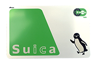

A Suica Card, is essentially are a prepaid form of electronic money, that comes in both a physical and digital format. Often used for trains, subways, buses and monorails across Japan! Most people would recognize these cards through their ubiquitous green and silver sign, accompanied by the company’s own mascot, the Suica Penguin! They are a universal symbol for those on their daily commute, or for tourists exploring the country for the very first time!
Designed by Tomotomo Tanaka and Chiharu Sakazaki in the early 2000s, the penguin was deliberately nameless, supposedly serving as an avatar for every commuter tapping the turnstiles. Surprisingly, due to the fact that Suica doesn’t have the license to the mascot itself, it is announced that after 25 years, the company is going to retire the penguin mascot, as the license is soon expiring.
To a lot of people, the presence of the mascot was a highlight of their trip across Japan, including mines! I remember hearing the news that the Suica “Penguin” was going to be replaced with a new mascot. I was utterly heartbroken. It was like saying goodbye to an old friend, as I had a lot of memories in regards to that card. This card, to me, was a symbol of my high school graduation trip with life-long friends, evoking memories of being lost on the subway due to both our phones dying and experiencing language barriers. Forever keeping the very card that I’ve used and abused in my wallet, as a keepsake torwards a transitory period of my life.